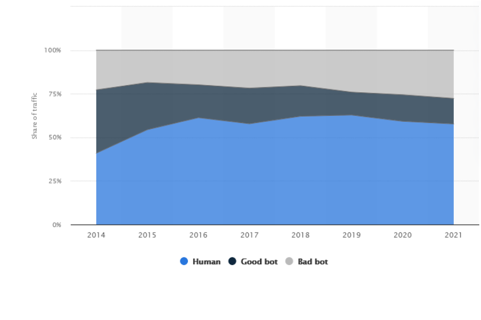

What are Bots?
Internet bots are programs created to do repetitive tasks that a human wouldn't normally be willing to do. This can include automatic posting, replying, and liking/disliking posts en masse. They are very powerful tools that can be used to reach out to thousands of people via the internet. An internet bot doesn't inherently have a bias but when it gets into the hands of a person who does, it can be used to amplify their views tremendously. When bots infiltrate a community, they are designed to hide themselves as real people and simulate genuine online activity. A person might not know when they're interacting with a bot or not.
The graph on the right shows the estimated amount of traffic given by bots and people on the internet. After 2014, bots have shown steady growth in their share of the internet. If this trend continues, bots can make up about 50% of all internet traffic
The Threat
As mentioned before, internet bots are very powerful and can post en masse. As posts can contain whatever biased information the user pleases, they can be used to spread misinformation, usually for a political advantage. Misinformation is very dangerous and is only made widespread with the use of bots in the wrong hands. In recent years, bots have been made more accessible to a wider range of people which only can increase the already gigantic number of bots on the internet. Even the mere existence of them is decreasing the integrity of social media.
{kind=link}
{kind=link}